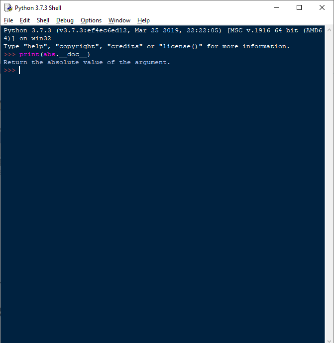

Вбудовані функції#
У середовищі Python без операцій імпорту є більше сотні вбудованих об’єктів, в основному, функцій і виключень (exception). Для зручності функції умовно розділені за категоріями:
Функції перетворення типів і класи:
coerce,str,repr,int,list,tuple,long,float,complex,dict,super,file,bool,object.Числові і рядкові функції:
abs,divmod,ord,pow,len,chr,unichr,hex,oct,cmp,round,unicode.Функції обробки даних:
apply,map,filter,reduce,zip,range,xrange,max,min,iter,enumerate,sum.Функції визначення властивостей:
hash,id,callable,issubclass,isinstance,type.Функції для доступу до внутрішніх структурам:
locals,globals,vars,intern,dir.Функції компіляції та виконання:
eval,execfile,reload,__import__,compile.Функції введення-виведення:
input,raw_input,open.Функції для роботи з атрибутами:
getattr,setattr,delattr,hasattr.Функції-“прикрашувачи” методів класів:
staticmethod,classmethod,property.Інші функції:
buffer,slice.
Уточнити призначення функції, її аргументів і результату можна в інтерактивній сесії інтерпретатора Python : 
Ще один варіант отримати інформацію про функції можна, звернувшись за адресою: https://docs.python.org/3.9/library/functions.html#help.
У Додатку 2 описаний синтаксис вбудованих функцій, найбільш уживаних у курсі вивчення мови Python.
У Додатку 3 перераховані ключові слова мови Python. Ці зарезервовані слова не можна використовувати в якості імені змінної або будь-якого іншого ідентифікатора. Всі ключові слова Python складаються тільки з букв в нижньому регістрі.
Отримати список ключових слів можливо в інтерпретаторі командою:
import keyword
print(keyword.kwlist)
['False', 'None', 'True', '__peg_parser__', 'and', 'as', 'assert', 'async', 'await', 'break', 'class', 'continue', 'def', 'del', 'elif', 'else', 'except', 'finally', 'for', 'from', 'global', 'if', 'import', 'in', 'is', 'lambda', 'nonlocal', 'not', 'or', 'pass', 'raise', 'return', 'try', 'while', 'with', 'yield']